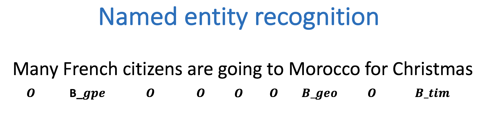
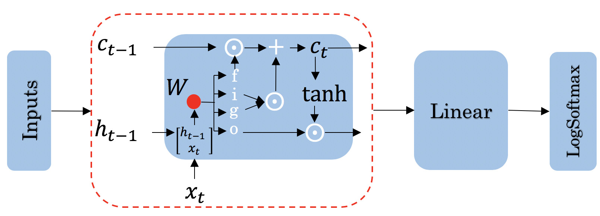

Assignment 2 - Named Entity Recognition (NER)#
Welcome to the second programming assignment of Course 3. In this assignment, you will learn to build more complicated models with Tensorflow. By completing this assignment, you will be able to:
Design the architecture of a neural network, train it, and test it.
Process features and represents them
Understand word padding
Implement LSTMs
Test with your own sentence
Before getting started take some time to read the following tips:
TIPS FOR SUCCESSFUL GRADING OF YOUR ASSIGNMENT:#
All cells are frozen except for the ones where you need to submit your solutions.
You can add new cells to experiment but these will be omitted by the grader, so don’t rely on newly created cells to host your solution code, use the provided places for this.
You can add the comment # grade-up-to-here in any graded cell to signal the grader that it must only evaluate up to that point. This is helpful if you want to check if you are on the right track even if you are not done with the whole assignment. Be sure to remember to delete the comment afterwards!
To submit your notebook, save it and then click on the blue submit button at the beginning of the page.
1 - Introduction#
Let’s begin by defining what a named entity recognition (NER) is. NER is a subtask of information extraction that locates and classifies named entities in a text. The named entities could be organizations, persons, locations, times, etc.
For example:

Is labeled as follows:
French: geopolitical entity
Morocco: geographic entity
Christmas: time indicator
Everything else that is labeled with an O is not considered to be a named entity. In this assignment, you will train a named entity recognition system that could be trained in a few seconds (on a GPU) and will get around 75% accuracy. You will then evaluate your model and see you get 97% accuracy! Finally, you will be able to test your named entity recognition system with your own sentence.
import os
os.environ['TF_CPP_MIN_LOG_LEVEL'] = '3'
import numpy as np
import pandas as pd
import tensorflow as tf
# set random seeds to make this notebook easier to replicate
tf.keras.utils.set_random_seed(33)
import w2_unittest
2 - Exploring the Data#
You will be using a dataset from Kaggle, which it will be preprocessed for you. The original data consists of four columns: the sentence number, the word, the part of speech of the word (it won’t be used in this assignment), and the tags. A few tags you might expect to see are:
geo: geographical entity
org: organization
per: person
gpe: geopolitical entity
tim: time indicator
art: artifact
eve: event
nat: natural phenomenon
O: filler word
# display original kaggle data
data = pd.read_csv("data/ner_dataset.csv", encoding = "ISO-8859-1")
train_sents = open('data/small/train/sentences.txt', 'r').readline()
train_labels = open('data/small/train/labels.txt', 'r').readline()
print('SENTENCE:', train_sents)
print('SENTENCE LABEL:', train_labels)
print('ORIGINAL DATA:\n', data.head())
del(data, train_sents, train_labels)
SENTENCE: Thousands of demonstrators have marched through London to protest the war in Iraq and demand the withdrawal of British troops from that country .
SENTENCE LABEL: O O O O O O B-geo O O O O O B-geo O O O O O B-gpe O O O O O
ORIGINAL DATA:
Sentence # Word POS Tag
0 Sentence: 1 Thousands NNS O
1 NaN of IN O
2 NaN demonstrators NNS O
3 NaN have VBP O
4 NaN marched VBN O
2.1 - Importing the Data#
In this part, you will import the preprocessed data and explore it.
def load_data(file_path):
with open(file_path,'r') as file:
data = np.array([line.strip() for line in file.readlines()])
return data
train_sentences = load_data('data/large/train/sentences.txt')
train_labels = load_data('data/large/train/labels.txt')
val_sentences = load_data('data/large/val/sentences.txt')
val_labels = load_data('data/large/val/labels.txt')
test_sentences = load_data('data/large/test/sentences.txt')
test_labels = load_data('data/large/test/labels.txt')
---------------------------------------------------------------------------
UnicodeDecodeError Traceback (most recent call last)
Cell In[5], line 1
----> 1 train_sentences = load_data('data/large/train/sentences.txt')
2 train_labels = load_data('data/large/train/labels.txt')
4 val_sentences = load_data('data/large/val/sentences.txt')
Cell In[4], line 3, in load_data(file_path)
1 def load_data(file_path):
2 with open(file_path,'r') as file:
----> 3 data = np.array([line.strip() for line in file.readlines()])
4 return data
File ~\Python\Lib\encodings\cp1252.py:23, in IncrementalDecoder.decode(self, input, final)
22 def decode(self, input, final=False):
---> 23 return codecs.charmap_decode(input,self.errors,decoding_table)[0]
UnicodeDecodeError: 'charmap' codec can't decode byte 0x9d in position 4593: character maps to <undefined>
3 - Encoding#
3.1 Encoding the sentences#
In this section, you will use tf.keras.layers.TextVectorization to transform the sentences into integers, so they can be fed into the model you will build later on.
You can use help(tf.keras.layers.TextVectorization) to further investigate the object and its parameters.
The parameter you will need to pass explicitly is standardize. This will tell how the parser splits the sentences. By default, standardize = 'lower_and_strip_punctuation', this means the parser will remove all punctuation and make everything lowercase. Note that this may influence the NER task, since an upper case in the middle of a sentence may indicate an entity. Furthermore, the sentences in the dataset are already split into tokens, and all tokens, including punctuation, are separated by a whitespace. The punctuations are also labeled. That said, you will use standardize = None so everything will just be split into single tokens and then mapped to a positive integer.
Note that tf.keras.layers.TextVectorization will also pad the sentences. In this case, it will always pad using the largest sentence in the set you call it with. You will be calling it for the entire training/validation/test set, but padding won’t impact at all the model’s output, as you will see later on.
After instantiating the object, you will need to adapt it to the sentences training set, so it will map every token in the training set to an integer. Also, it will by default create two tokens: one for unknown tokens and another for the padding token. Tensorflow maps in the following way:
padding token: “”, integer mapped: 0
unknown token “[UNK]”, integer mapped: 1
Exercise 1#
Instructions: Use the object tf.keras.layers.TextVectorization and the appropriate parameters to build a function that inputs an array of sentences and outputs an adapted sentence vectorizer and its vocabulary list.
# GRADED FUNCTION: get_sentence_vectorizer
def get_sentence_vectorizer(sentences):
tf.keras.utils.set_random_seed(33) ## Do not change this line.
"""
Create a TextVectorization layer for sentence tokenization and adapt it to the provided sentences.
Parameters:
sentences (list of str): Sentences for vocabulary adaptation.
Returns:
sentence_vectorizer (tf.keras.layers.TextVectorization): TextVectorization layer for sentence tokenization.
vocab (list of str): Extracted vocabulary.
"""
### START CODE HERE ###
# Define TextVectorization object with the appropriate standardize parameter
sentence_vectorizer = None
# Adapt the sentence vectorization object to the given sentences
None.adapt(None)
# Get the vocabulary
vocab = None
### END CODE HERE ###
return sentence_vectorizer, vocab
test_vectorizer, test_vocab = get_sentence_vectorizer(train_sentences[:1000])
print(f"Test vocab size: {len(test_vocab)}")
sentence = "I like learning new NLP models !"
sentence_vectorized = test_vectorizer(sentence)
print(f"Sentence: {sentence}\nSentence vectorized: {sentence_vectorized}")
Test vocab size: 4650
Sentence: I like learning new NLP models !
Sentence vectorized: [ 296 314 1 59 1 1 4649]
Expected output:
Test vocab size: 4650
Sentence: I like learning new NLP models !
Sentence vectorized: [ 296 314 1 59 1 1 4649]
w2_unittest.test_get_sentence_vectorizer(get_sentence_vectorizer)
All tests passed
sentence_vectorizer, vocab = get_sentence_vectorizer(train_sentences)
WARNING:tensorflow:5 out of the last 36 calls to <function PreprocessingLayer.make_adapt_function.<locals>.adapt_step at 0x7fdeaab8e700> triggered tf.function retracing. Tracing is expensive and the excessive number of tracings could be due to (1) creating @tf.function repeatedly in a loop, (2) passing tensors with different shapes, (3) passing Python objects instead of tensors. For (1), please define your @tf.function outside of the loop. For (2), @tf.function has reduce_retracing=True option that can avoid unnecessary retracing. For (3), please refer to https://www.tensorflow.org/guide/function#controlling_retracing and https://www.tensorflow.org/api_docs/python/tf/function for more details.
3.2 Encoding the labels#
In this section you will encode the labels. The process is a bit simpler than encoding the sentences, because there are only a few tags, compared with words in the vocabulary. Note, also, that there will be one extra tag to represent the padded token that some sentences may have included. Padding will not interfere at all in this task, as you will see further on. Run the next cell to print one example of a tag related to one sentence.
Because there is no meaning in having an UNK token for labels and the padding token will be another number different from 0 (you will see why soon), TextVectorization is not a good choice.
You will need also to pad the labels, because the number of labels must match the number of words.
print(f"Sentence: {train_sentences[0]}")
print(f"Labels: {train_labels[0]}")
Sentence: Thousands of demonstrators have marched through London to protest the war in Iraq and demand the withdrawal of British troops from that country .
Labels: O O O O O O B-geo O O O O O B-geo O O O O O B-gpe O O O O O
You will build the next function to extract all the different tags in a given set of labels.
def get_tags(labels):
tag_set = set() # Define an empty set
for el in labels:
for tag in el.split(" "):
tag_set.add(tag)
tag_list = list(tag_set)
tag_list.sort()
return tag_list
tags = get_tags(train_labels)
print(tags)
['B-art', 'B-eve', 'B-geo', 'B-gpe', 'B-nat', 'B-org', 'B-per', 'B-tim', 'I-art', 'I-eve', 'I-geo', 'I-gpe', 'I-nat', 'I-org', 'I-per', 'I-tim', 'O']
Now you will need to generate a tag map, i.e., a mapping between the tags and positive integers.
def make_tag_map(tags):
tag_map = {}
for i,tag in enumerate(tags):
tag_map[tag] = i
return tag_map
The tag_map is a dictionary that maps the tags that you could have to numbers. Run the cell below to see the possible classes you will be predicting. The prepositions in the tags mean:
I: Token is inside an entity.
B: Token begins an entity.
If you had the sentence
“Sharon flew to Miami on Friday”
The tags would look like:
Sharon B-per
flew O
to O
Miami B-geo
on O
Friday B-tim
where you would have three tokens beginning with B-, since there are no multi-token entities in the sequence. But if you added Sharon’s last name to the sentence:
“Sharon Floyd flew to Miami on Friday”
Sharon B-per
Floyd I-per
flew O
to O
Miami B-geo
on O
Friday B-tim
Your tags would change to show first “Sharon” as B-per, and “Floyd” as I-per, where I- indicates an inner token in a multi-token sequence.
tag_map = make_tag_map(tags)
print(tag_map)
{'B-art': 0, 'B-eve': 1, 'B-geo': 2, 'B-gpe': 3, 'B-nat': 4, 'B-org': 5, 'B-per': 6, 'B-tim': 7, 'I-art': 8, 'I-eve': 9, 'I-geo': 10, 'I-gpe': 11, 'I-nat': 12, 'I-org': 13, 'I-per': 14, 'I-tim': 15, 'O': 16}
3.3 Padding the labels#
In this section, you will pad the labels. TextVectorization already padded the sentences, so you must ensure that the labels are properly padded as well. This is not a hard task for two main reasons:
Tensorflow has built-in functions for padding
Padding will be performed uniformly per dataset (train, validation and test) using the maximum sentence length in each dataset and the size of each sentence is exactly the same as the size of their respective labels.
You will pad the vectorized labels with the value -1. You will not use 0 to simplify loss masking and evaluation in further steps. This is because to properly classify one token, a log softmax transformation will be performed and the index with greater value will be the index label. Since index starts at 0, it is better to keep the label 0 as a valid index, even though it is possible to also use 0 as a mask value for labels, but it would require some tweaks in the model architecture or in the loss computation.
Tensorflow provides the function tf.keras.utils.pad_sequences. The arguments you will need are:
sequences: An array with the labels.padding: The position where padding will take place, the standard ispre, meaning the sequences will be padded at the beginning. You need to pass the argumentpost.value: Padding value. The default value is 0.
3.4 Building the label vectorizer#
Now you’re ready to code the label vectorizer.
Exercise 2#
Instructions: You will build the label vectorizer, a function that inputs a list of labels and a tag mapping and outputs their respective label ids via a tag map lookup. The tensorflow function pad_sequences can be called by tf.keras.utils.pad_sequences. You may also type help(tf.keras.utils.pad_sequences) to see its documentation.
# GRADED FUNCTION: label_vectorizer
def label_vectorizer(labels, tag_map):
"""
Convert list of label strings to padded label IDs using a tag mapping.
Parameters:
labels (list of str): List of label strings.
tag_map (dict): Dictionary mapping tags to IDs.
Returns:
label_ids (numpy.ndarray): Padded array of label IDs.
"""
label_ids = [] # It can't be a numpy array yet, since each sentence has a different size
### START CODE HERE ###
# Each element in labels is a string of tags so for each of them:
for element in None:
# Split it into single tokens. You may use .split function for strings. Be aware to split it by a blank space!
tokens = element.split(None)
# Use the dictionaty tag_map passed as an argument to the label_vectorizer function
# to make the correspondence between tags and numbers.
element_ids = None
for token in tokens:
element_ids.append(None)
# Append the found ids to corresponding to the current element to label_ids list
label_ids.append(None)
# Pad the elements
label_ids = None
### END CODE HERE ###
return label_ids
print(f"Sentence: {train_sentences[5]}")
print(f"Labels: {train_labels[5]}")
print(f"Vectorized labels: {label_vectorizer([train_labels[5]], tag_map)}")
Sentence: The party is divided over Britain 's participation in the Iraq conflict and the continued deployment of 8,500 British troops in that country .
Labels: O O O O O B-gpe O O O O B-geo O O O O O O O B-gpe O O O O O
Vectorized labels: [[16 16 16 16 16 3 16 16 16 16 2 16 16 16 16 16 16 16 3 16 16 16 16 16]]
Expected output:
Sentence: The party is divided over Britain 's participation in the Iraq conflict and the continued deployment of 8,500 British troops in that country .
Labels: O O O O O B-gpe O O O O B-geo O O O O O O O B-gpe O O O O O
Vectorized labels: [[16 16 16 16 16 3 16 16 16 16 2 16 16 16 16 16 16 16 3 16 16 16 16 16]]
w2_unittest.test_label_vectorizer(label_vectorizer)
All tests passed
4 Building the Dataset#
In this section, you will build the dataset for training, validation and testing. You will be using tf.data.Dataset class, which provides an optimized way to handle data to feed into a tensorflow model. It may be not as straightforward as a pandas dataset, but it avoids keeping all the data in memory, thus it makes the training faster.
You will be using the tf.data.Dataset.from_tensor_slices function that converts any iterable into a Tensorflow dataset. You can pass a tuple of (sentences,labels) and Tensorflow will understand that each sentence is mapped to its respective label, therefore it is expected that if a tuple of arrays is passed, both arrays have the same length.
def generate_dataset(sentences, labels, sentence_vectorizer, tag_map):
sentences_ids = sentence_vectorizer(sentences)
labels_ids = label_vectorizer(labels, tag_map = tag_map)
dataset = tf.data.Dataset.from_tensor_slices((sentences_ids, labels_ids))
return dataset
The next cell will use the function defined above to generate a Tensorflow Dataset for each of the train, validation and test datasets.
train_dataset = generate_dataset(train_sentences,train_labels, sentence_vectorizer, tag_map)
val_dataset = generate_dataset(val_sentences,val_labels, sentence_vectorizer, tag_map)
test_dataset = generate_dataset(test_sentences, test_labels, sentence_vectorizer, tag_map)
# Exploring information about the training data
print(f'The number of outputs is {len(tags)}')
# The number of vocabulary tokens (including <PAD>)
g_vocab_size = len(vocab)
print(f"Num of vocabulary words in the training set: {g_vocab_size}")
print('The training size is', len(train_dataset))
print('The validation size is', len(val_dataset))
print('An example of the first sentence is\n\t', next(iter(train_dataset))[0].numpy())
print('An example of its corresponding label is\n\t', next(iter(train_dataset))[1].numpy())
The number of outputs is 17
Num of vocabulary words in the training set: 29847
The training size is 33570
The validation size is 7194
An example of the first sentence is
[1046 6 1121 18 1832 232 543 7 528 2 158 5 60 9
648 2 922 6 192 87 22 16 54 3 0 0 0 0
0 0 0 0 0 0 0 0 0 0 0 0 0 0
0 0 0 0 0 0 0 0 0 0 0 0 0 0
0 0 0 0 0 0 0 0 0 0 0 0 0 0
0 0 0 0 0 0 0 0 0 0 0 0 0 0
0 0 0 0 0 0 0 0 0 0 0 0 0 0
0 0 0 0 0 0]
An example of its corresponding label is
[16 16 16 16 16 16 2 16 16 16 16 16 2 16 16 16 16 16 3 16 16 16 16 16
-1 -1 -1 -1 -1 -1 -1 -1 -1 -1 -1 -1 -1 -1 -1 -1 -1 -1 -1 -1 -1 -1 -1 -1
-1 -1 -1 -1 -1 -1 -1 -1 -1 -1 -1 -1 -1 -1 -1 -1 -1 -1 -1 -1 -1 -1 -1 -1
-1 -1 -1 -1 -1 -1 -1 -1 -1 -1 -1 -1 -1 -1 -1 -1 -1 -1 -1 -1 -1 -1 -1 -1
-1 -1 -1 -1 -1 -1 -1 -1]
3.5 - Considerations about RNNs and LSTMs inputs#
Tensorflow implementation of RNNs (in particular LSTMs) allow you to pass a variable size of input sentences, however this cannot be done in the same batch. You must assure that, for each batch, the shapes for our input tensors are the same.
A second point here is that, for this purpose, the size of the padding should not influence the final result. Therefore, it does not matter if you perform the padding for each batch or in the entire dataset.
4 - Building the Model#
4.1 Model structure#
You will now implement the model that will be able to determine the tags of sentences like the following:
The model architecture will be as follows:

Concretely, your inputs will be sentences represented as tensors that are fed to a model with:
An Embedding layer,
A LSTM layer
A Dense layer
A log softmax layer.
You may choose between outputting only the very last LSTM output for each sentence, but you may also request the LSTM to output every value for a sentence - this is what you want. You will need every output, because the idea is to label every token in the sentence and not to predict the next token or even make an overall classification task for that sentence.
This implies that when you input a single sentence, such as [452, 3400, 123, 0, 0, 0], the expected output should be an array for each word ID, with a length equal to the number of tags. This output is obtained by applying the LogSoftfmax function for each of the len(tags) values. So, in the case of the example array with a shape of (6,), the output should be an array with a shape of (6, len(tags)).
In your case, you’ve seen that each sentence in the training set is 104 values long, so in a batch of, say, 64 tensors, the model shoud input a tensor of shape (64,104) and output another tensor with shape (64,104,17).
Good news! We won’t make you implement the LSTM cell drawn above. You will be in charge of the overall architecture of the model.
Exercise 3#
Instructions: Implement the NER model, with the architecture discussed in the lectures. All the necessary layers are objects from the tensorflow.keras.layers library, but they are already loaded in memory, so you do not have to worry about function calls.
Please utilize help function e.g. help(tf.keras.layers.Dense) for more information on a layer
tf.keras.Sequential: Combinator that applies layers serially (by function composition) - this is not properly a layer (it is under
tensorflow.kerasonly and not undertensorflow.keras.layers). It is in fact a Tensorflow model object.You can add the layers to a
Sequentiallayer by calling the method.add(layer).You may skip the input shape and pass it in the first layer you instantiate, if necessary (RNNs usually don’t need to fix an input length).
tf.keras.layers.Embedding: Initializes the embedding layer. An embedding layer in tensorflow will input only positive integers.
Embedding(input_dim, output_dim, mask_zero = False).input_dimis the expected range of integers for each tensor in the batch. Note that the input_dim is not related to array size, but to the possible range of integers expected in the input. Usually this is the vocabulary size, but it may differ by 1, depending on further parameters. See below.output_dimis the number of elements in the word embedding (some choices for a word embedding size range from 150 to 300, for example). Each word processed will be assigned an array of sizeoutput_dim. So if one array of shape (3,) is passed (example of such an array[100,203,204]), then the Embedding layer should have output shape (3,output_dim).mask_zerois a boolean telling whether 0 is a mask value or not. Ifmask_zero = True, then some considerations must be done: 1. The value 0 should be reserved as the mask value, as it will be ignored in training. 2. You need to add 1 ininput_dim, since now Tensorflow will consider that one extra 0 value may show up in each sentence.
tf.keras.layers.LSTM: An LSTM layer.
LSTM(units, return_sequences)Builds an LSTM layer with hidden state and cell sizes equal tounits. The arguments you will need: 1.units: It is the number ofLSTMcells you will create to pass every input to. In this case, set theunitsas the Embeddingoutput_dim. This is just a choice, in fact there is no static rule preventing one from choosing any amount of LSTM units. 2.return_sequences: A boolean, telling whether you want to return every output value from the LSTM cells. Ifreturn_sequences = False, then the LSTM output shape will be(batch_size, units). Otherwise, it is(batch_size, sentence_length, units), since there will be an output for each word in the sentence.
tf.keras.layers.Dense: A dense layer.
Dense(units, activation): The parameters for this layer are: 1.units: It is the number of units chosen for this dense layer, i.e., it is the dimensionality of the output space. In this case, each value passed through the Dense layer must be mapped into a vector with lengthnum_of_classes(in this case,len(tags)). 2.activation: This is the activation that will be performed after computing the values in the Dense layer. Since the Dense layer comes before the LogSoftmax step, you can pass the LogSoftmax function as activation function here. **You can find the implementation for LogSoftmax undertf.nn. So you may call it astf.nn.log_softmax. See its documentation here.
Instructions: You will build a function that inputs the number of tags, the vocabulary size and an optional parameter to control the embedding dimension and outputs a tensorflow model as discussed in the lectures.
# GRADED FUNCTION: NER
def NER(len_tags, vocab_size, embedding_dim = 50):
"""
Create a Named Entity Recognition (NER) model.
Parameters:
len_tags (int): Number of NER tags (output classes).
vocab_size (int): Vocabulary size.
embedding_dim (int, optional): Dimension of embedding and LSTM layers (default is 50).
Returns:
model (Sequential): NER model.
"""
### START CODE HERE ###
model = tf.keras.Sequential(name = 'sequential')
# Add the tf.keras.layers.Embedding layer. Do not forget to mask out the zeros!
model.add(None)
# Add the LSTM layer. Make sure you are passing the right dimension (defined in the docstring above)
# and returning every output for the tf.keras.layers.LSTM layer and not the very last one.
model.add(None)
# Add the final tf.keras.layers.Dense with the appropriate activation function. Remember you must pass the activation function itself ant not its call!
# You must use tf.nn.log_softmax instead of tf.nn.log_softmax().
model.add(None)
### END CODE HERE ###
return model
w2_unittest.test_NER(NER)
All tests passed
4.2 Masked loss and metrics#
Before training the model, you need to create your own function to compute the accuracy. Tensorflow has built-in accuracy metrics but you cannot pass values to be ignored. This will impact the calculations, since you must remove the padded values. Before diving into the exercise, let’s just make some points clear.
Usually, the metric that inputs true labels and predicted labels and outputs how many times the predicted and true labels match is called accuracy. In some cases, however, there is one more step before getting the predicted labels. This may happen if, instead of passing the predicted labels, a vector of probabilities is passed. In such case, there is a need to perform an argmax for each prediction to find the appropriate predicted label. Such situations happen very often, therefore Tensorflow has a set of functions, with prefix Sparse, that performs this operation in the backend. Unfortunately, it does not provide values to ignore in the accuracy case. This is what you will work on now.
Note that the model’s prediction has 3 axes:
the number of examples (batch size)
the number of words in each example (padded to be as long as the longest sentence in the batch)
the number of possible targets (the 17 named entity tags).
Another important function is the loss function. In this case, you will use the Cross Entropy loss, but you need a multiclass implementation of it, also you may look for its Sparse version. Tensorflow has a SparseCategoricalCrossentropy loss function, which it is already imported by the name SparseCategoricalCrossEntropy.
SparseCategoricalCrossentropy: The Sparse Categorical Crossentropy Loss Function.
The arguments you will need:
from_logits: This indicates if the values are raw values or normalized values (probabilities). Since the last layer of the model finishes with a LogSoftMax call, the results are not normalized - they do not lie between 0 and 1.ignore_class: This indicates which class should be ignored when computing the crossentropy. Remember that the class related to padding value is set to be 0.
Note: You do not need to worry if the outputs are normalized or not in the accuracy case. Can you guess why? :)
Exercise 4#
Instructions: You will use a tf.keras.losses.SparseCategoricalCrossentropy object to create a loss function that ignores the padded value related to the label. Remember that for padding you are using the value \(-1\) and not \(0\), as opposed to the text padding!
# GRADED FUNCTION: masked_loss
def masked_loss(y_true, y_pred):
"""
Calculate the masked sparse categorical cross-entropy loss.
Parameters:
y_true (tensor): True labels.
y_pred (tensor): Predicted logits.
Returns:
loss (tensor): Calculated loss.
"""
### START CODE HERE ###
# Calculate the loss for each item in the batch. Remember to pass the right arguments, as discussed above!
loss_fn = tf.keras.losses.SparseCategoricalCrossentropy(None, None)
# Use the previous defined function to compute the loss
loss = None(None,None)
### END CODE HERE ###
return loss
true_labels = [0,1,2,0]
predicted_logits = [[-2.3,-0.51,-1.20] , [-1.61,-0.36,-2.30], [-2.30, -0.69,-0.92], [-0.92,-0.92,-1.61]]
print(masked_loss(true_labels, predicted_logits))
tf.Tensor(1.1242604, shape=(), dtype=float32)
Expected output:
tf.Tensor(1.1242604, shape=(), dtype=float32)
w2_unittest.test_masked_loss(masked_loss)
Exercise 5#
Instructions: You will maked a masked version of the accuracy function. You will need to perform an argmax to get the predicted label for each element in the batch. Remember to provide the appropriate axis in the argmax function. Furthermore, remember to use only tensorflow operations. Even though numpy has every function you will need, to pass it as a loss function and/or metric function, you must use tensorflow operations, due to internal optimizations that Tensorflow performs for reliable fitting. The following tensorflow functions are already loaded in memory, so you can directly call them.
tf.equal, equivalent to np.equal
tf.cast, equivalent to np.astype
tf.reduce_sum, equiavalent to np.sum
tf.math.argmax, equivalent to np.argmax
You may need tf.float32 while casting
# GRADED FUNCTION: masked_accuracy
def masked_accuracy(y_true, y_pred):
"""
Calculate masked accuracy for predicted labels.
Parameters:
y_true (tensor): True labels.
y_pred (tensor): Predicted logits.
Returns:
accuracy (tensor): Masked accuracy.
"""
### START CODE HERE ###
# Calculate the loss for each item in the batch.
# You must always cast the tensors to the same type in order to use them in training. Since you will make divisions, it is safe to use tf.float32 data type.
y_true = tf.cast(y_true, tf.float32)
# Create the mask, i.e., the values that will be ignored
mask = None
mask = tf.cast(mask, tf.float32)
# Perform argmax to get the predicted values
y_pred_class = None
y_pred_class = tf.cast(y_pred_class, tf.float32)
# Compare the true values with the predicted ones
matches_true_pred = tf.equal(None, None)
matches_true_pred = tf.cast(matches_true_pred , tf.float32)
# Multiply the acc tensor with the masks
matches_true_pred *= None
# Compute masked accuracy (quotient between the total matches and the total valid values, i.e., the amount of non-masked values)
masked_acc = None/None
### END CODE HERE ###
return masked_acc
true_labels = [0,1,2,0]
predicted_logits = [[0.1,0.6,0.3] , [0.2,0.7,0.1], [0.1, 0.5,0.4], [0.4,0.4,0.2]]
print(masked_accuracy(true_labels, predicted_logits))
Expected output:
tf.Tensor(0.5, shape=(), dtype=float32)
w2_unittest.test_masked_accuracy(masked_accuracy)
Now you will create the model and get a summary of its parameters and layers.
model = NER(len(tag_map), len(vocab))
model.summary()
Expected output:
Model: "sequential"
_________________________________________________________________
Layer (type) Output Shape Param #
=================================================================
embedding (Embedding) (None, None, 50) 1492400
lstm (LSTM) (None, None, 50) 20200
dense (Dense) (None, None, 17) 867
=================================================================
Total params: 1513467 (5.77 MB)
Trainable params: 1513467 (5.77 MB)
Non-trainable params: 0 (0.00 Byte)
_________________________________________________________________
4.3 A note on padding#
You will check now how padding does not affect the model’s output. Of course the output dimension will change. If ten zeros are added at the end of the tensor, then the resulting output dimension will have 10 more elements (more specifically, 10 more arrays of length 17 each). However, those are removed from any calculation further on, so it won’t impact at all the model’s performance and training. You will be using the function tf.expand_dims.
x = tf.expand_dims(np.array([545, 467, 896]), axis = 0) # Expanding dims is needed to pass it to the model,
# since it expects batches and not single prediction arrays
x_padded = tf.expand_dims(np.array([545, 467, 896, 0, 0, 0]), axis = 0)
Can you guess the final output prediction shape for each array defined above?
pred_x = model(x)
pred_x_padded = model(x_padded)
print(f'x shape: {pred_x.shape}\nx_padded shape: {pred_x_padded.shape}')
If the last three elements of pred_x_padded are removed, both pred_x and pred_x_padded[:3] must have the same elements.
np.allclose(pred_x, pred_x[:3])
Great! Now one last check: let’s see that both pred_x and pred_x_padded return the same loss and accuracy values. For that, you will need a y_true and y_true_padded arrays.
y_true = tf.expand_dims([16, 6, 12], axis = 0)
y_true_padded = tf.expand_dims([16,6,12,-1,-1,-1], axis = 0) # Remember you mapped the padded values to -1 in the labels
print(f"masked_loss is the same: {np.allclose(masked_loss(y_true,pred_x), masked_loss(y_true_padded,pred_x_padded))}")
print(f"masked_accuracy is the same: {np.allclose(masked_accuracy(y_true,pred_x), masked_accuracy(y_true_padded,pred_x_padded))}")
After this quick sanity check, you will now compile the model.
You will compile the model as follows:
Use the Adam optimizer to compute the stochastic gradient descent, with learning rate 0.01
Use the loss function
masked_lossas loss function,As evaluation metrics, you will use both masked_loss and masked_accuracy
model.compile(optimizer=tf.keras.optimizers.Adam(0.01),
loss = masked_loss,
metrics = [masked_accuracy])
4.4 - Training the Model#
You will now train the model.
Instructions:
You will train it with
shuffle = True, over 2 epochs and passing the validation dataset asvalidation_data.You will run into an error if you just pass the datasets as they are right now, because they are not prepared in batches. You must use the method
.batchthat returns a dataset already divided in batches
NOTE: The fitting takes about 1 minute to run. Only the first epoch is slow, the following ones are much faster.
tf.keras.utils.set_random_seed(33) ## Setting again a random seed to ensure reproducibility
BATCH_SIZE = 64
model.fit(train_dataset.batch(BATCH_SIZE),
validation_data = val_dataset.batch(BATCH_SIZE),
shuffle=True,
epochs = 2)
5 - Compute Accuracy#
You will now evaluate on the test set. Previously, you have seen the accuracy on the training set and the validation (noted as eval) set. You will now evaluate on your test set. You already have a function to compute the accuracy.
# Convert the sentences into ids
test_sentences_id = sentence_vectorizer(test_sentences)
# Convert the labels into token ids
test_labels_id = label_vectorizer(test_labels,tag_map)
# Rename to prettify next function call
y_true = test_labels_id
y_pred = model.predict(test_sentences_id)
The next cell computes the accuracy for the test set.
print(f"The model's accuracy in test set is: {masked_accuracy(y_true,y_pred).numpy():.4f}")
6 - Testing with your Own Sentence#
In this section you will make a predictor function to predict the NER labels for any sentence.
Exercise 6#
Instructions: You will make a function predict that inputs one arbitrary sentence, a trained NER model, the sentence_vectorizer and the tag mapping and return a list of predicted NER labels. Remember that the sentences in pre-processing were already separated by token, so you do not need to worry about separating tokens such as commas or dots. You will just pass one sentence in the desired format, e.g., sentence = “I like apples , oranges and grapes .”
To get a single prediction from a tensorflow model, you will need to make some changes in the input array, since tensorflow expects a batch of sentences. You can use the function tf.expand_dims to do this.
# GRADED FUNCTION: predict
def predict(sentence, model, sentence_vectorizer, tag_map):
"""
Predict NER labels for a given sentence using a trained model.
Parameters:
sentence (str): Input sentence.
model (tf.keras.Model): Trained NER model.
sentence_vectorizer (tf.keras.layers.TextVectorization): Sentence vectorization layer.
tag_map (dict): Dictionary mapping tag IDs to labels.
Returns:
predictions (list): Predicted NER labels for the sentence.
"""
### START CODE HERE ###
# Convert the sentence into ids
sentence_vectorized = None
# Expand its dimension to make it appropriate to pass to the model
sentence_vectorized = tf.expand_dims(None, None)
# Get the model output
output = None
# Get the predicted labels for each token, using argmax function and specifying the correct axis to perform the argmax
outputs = np.argmax(None, axis = None)
# Next line is just to adjust outputs dimension. Since this function expects only one input to get a prediction, outputs will be something like [[1,2,3]]
# so to avoid heavy notation below, let's transform it into [1,2,3]
outputs = outputs[0]
# Get a list of all keys, remember that the tag_map was built in a way that each label id matches its index in a list
labels = list(tag_map.keys())
pred = []
# Iterating over every predicted token in outputs list
for tag_idx in None:
pred_label = None
pred.append(None)
### END CODE HERE ###
return pred
w2_unittest.test_predict(predict, model, sentence_vectorizer, tag_map)
# Try the output for the introduction example
#sentence = "Many French citizens are goin to visit Morocco for summer"
#sentence = "Sharon Floyd flew to Miami last Friday"
# New york times news:
sentence = "Peter Parker , the White House director of trade and manufacturing policy of U.S , said in an interview on Sunday morning that the White House was working to prepare for the possibility of a second wave of the coronavirus in the fall , though he said it wouldn ’t necessarily come"
predictions = predict(sentence, model, sentence_vectorizer, tag_map)
for x,y in zip(sentence.split(' '), predictions):
if y != 'O':
print(x,y)
Expected output:
Peter B-per
Parker I-per
White B-org
House I-org
Sunday B-tim
morning I-tim
White B-org
House I-org